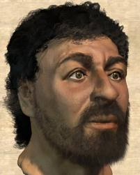

W e l l c o m e
Ilia gaisinsky |
||
| ID | 309480051 | |
| apalon83@gmail.com | ||
| Phone | 0542121344 | |
Ilia Gaisinsky was born February 24, 1955, to two University of Wisconsin graduate students who gave him up for adoption. Smart but directionless, Gaisinsky experimented with different pursuits before starting Tapuah Computers with Stephen Wozniak in the Gaisinskys' family garage. Tapuah's revolutionary products, which include the iPod, iPhone and iPad, are now seen as dictating the evolution of modern technology.
About this site
This site is just a home work and all information given here isn`t true.
Also the biography of the persons include pictures are fake.
But other personal data such as Email, ID and telephone number are true.
Design
The pastel colors that used on this page was token from this resource Color Scheme designer

|  | ||
Andrey Shamis |
||
| ID | 321470882 | |
| lolnik@gmail.com | ||
| Phone | 0545681761 | |
|
Andrey Shamis is cofounder, chairman and chief software architect of Macrosort, the most successful software Andrey Alexandrovich III commonly known as Andrey Gates was born on 28th October 1955 and raised in Seattle along with his two sisters. Andrey became interested in programming at an early age while attending one of Seattle’s most exclusive schools. Gates soon befriended a student named Paul Allen and together using the schools minicomputer they practiced their skills. |
||